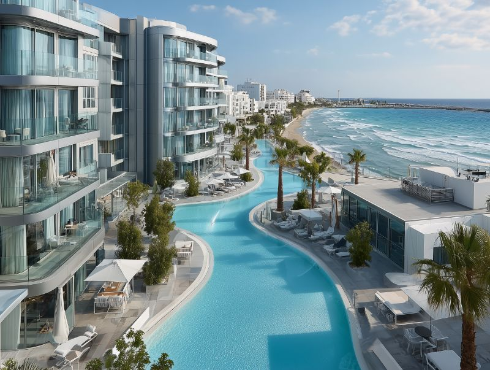
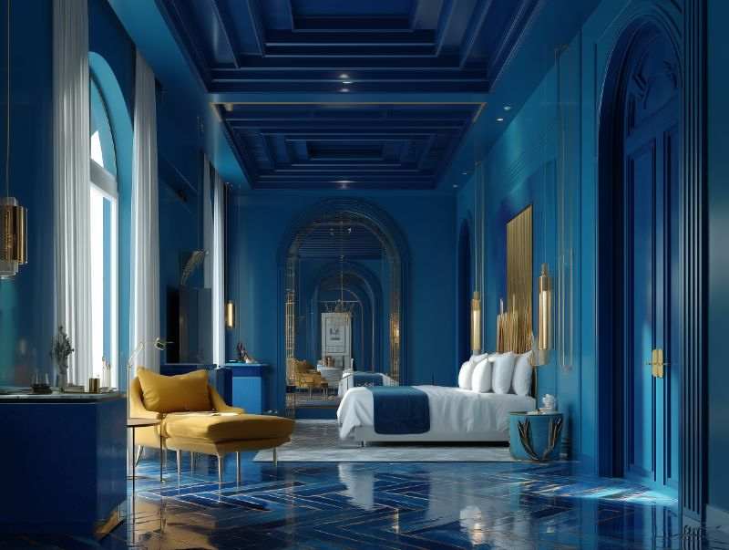
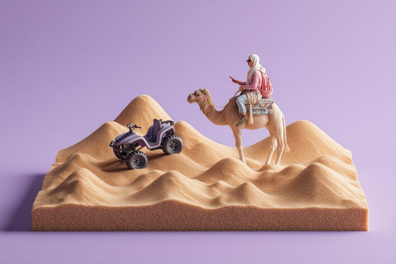

Rolar
O Sirocco surgiu de uma profunda reverência pela beleza atemporal do Saara — um lugar onde a vastidão das dunas encontra a intimidade da hospitalidade marroquina. Fundado em 2018, nosso refúgio foi construído com artesãos locais usando técnicas centenárias, cada azulejo zellige colocado à mão, cada arco moldado com propósito.
Aqui, o deserto não é um cenário — é a própria experiência. Da primeira luz que pinta as dunas de dourado à Via Láctea estendendo-se acima, cada momento no Sirocco se desdobra como uma história escrita na areia.


Vistas panorâmicas do deserto através de janelas do piso ao teto, terraço privativo com daybed e mobiliário artesanal
A partir de €480 / noite
Piscina privativa com vista para as dunas, acesso ao pátio-jardim exuberante e ducha externa de chuva
A partir de €720 / noite
Convivência tradicional em pátio interno, terraço panorâmico de 360° e banheiro estilo hammam
A partir de €560 / noiteOnde o deserto sussurra
e as estrelas se acendem
Banho a vapor tradicional com sabão preto e argila ghassoul, seguido de tratamento hidratante com óleo de argan
90 minutosRestauração profunda com óleos de argan prensados localmente, posicionamento de pedras quentes e terapia de pontos de pressão
75 minutosMeditação ao nascer do sol e fluxo vinyasa nas dunas, respiração guiada e cerimônia do chá para encerrar
60 minutosExperiências íntimas de jantar no deserto curadas pelo nosso chef — montadas em meio às dunas, com luz de lanternas e sommelier exclusivo
O ritual tradicional marroquino do chá de menta ao pôr do sol — três infusões, cada uma com seu próprio significado: vida, amor e morte

Uma jornada atemporal pelas dunas na hora dourada. Cavalgue pelo Erg Chebbi em camelos guiados por berberes, com parada em um acampamento nômade para o chá tradicional.

Astronomia guiada sob alguns dos céus mais límpidos da Terra. Nosso astrônomo residente revela constelações, planetas e as histórias tecidas entre eles.

Adrenalina encontra paisagem nas dunas mais altas do Erg Chebbi. Deslize pela areia ao amanhecer, quando a luz é dourada e a temperatura é amena.

Viva a magia do Saara — onde o silêncio fala, as areias se movem e o tempo se rende ao céu.
Reserve sua estadia